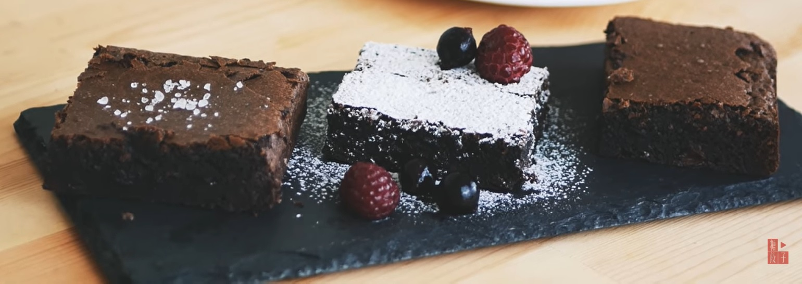

先將巧克力分成兩部分切碎，60g 做甘納許，40g拌入麵糊
將奶油以中火加熱融化，然後趁熱淋在60g的巧克力碎塊上，竟至兩分鐘，接著攪拌至完全融合滑順(巧克力奶油甘納許)
起一中大型的料理盆，打入兩顆雞蛋，加入白糖和黑糖(黑糖可以用二砂/黃砂糖替代)，以打蛋器打發
蛋糊要打發到膨鬆顏色變白
加入鹽與香草精，拌勻
加入巧克力甘納許，拌勻
篩入麵粉和可可粉，輕拌(Fold)到看不見乾粉即可，不要過度攪拌
最後將40g的巧克力碎塊拌入，麵糊即完成了
將烤模底部與四面抹上奶油，鋪上烘焙紙，同時烘焙紙的底部也要抹上奶油(這樣布朗尼就不會沾黏)
烤箱預熱 180° C，烤20分鐘
烤好後，將布朗尼留在烤盤上完全放涼，即可切片
